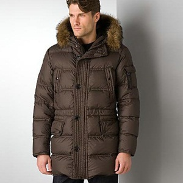
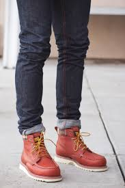
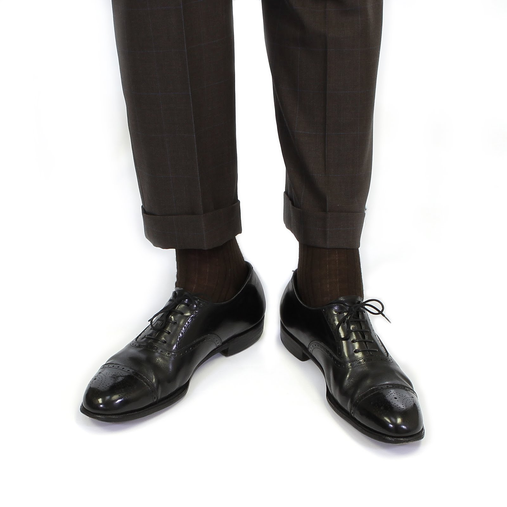
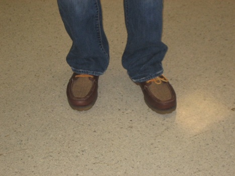
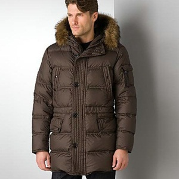
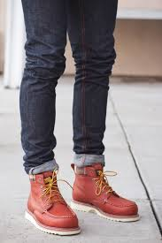
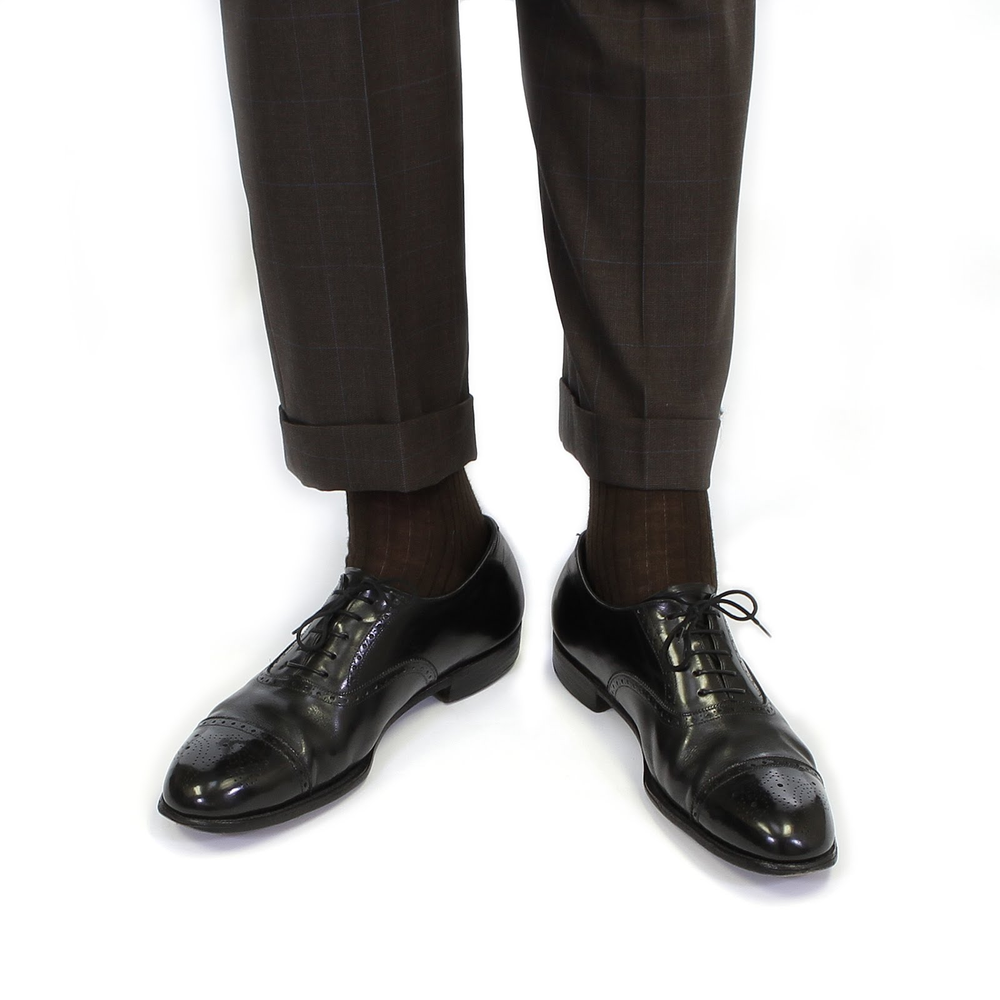
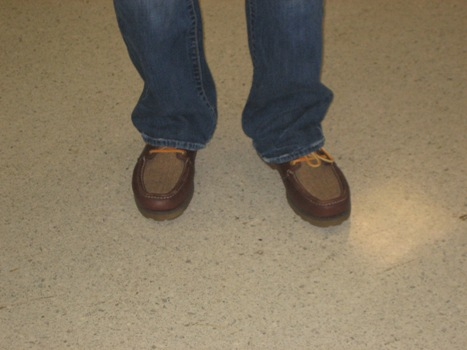

Robert Downey Jr is one sexy mother fucker. I always forget that he was the guy in Weird Science who pantsed the two main guys at the start. That was a dick move. Also, Kiss Kiss Bang Bang is an awesome movie
Gerard Butler is a little nancy boy who has to ask permission to use the restroom. He tried to fight me over using the blue play doh, but I whooped his ass
I don't even know who this mother fucker is. I bet he has sex with his socks on like a goober
One of the cashiers at HEB has his hair cut like Macklemore. He looks like a huge doucher, and I always refer to him as Mackleless. Thrift Shops are great places to shop for cheap clothes for halloween costumes.
This guy is making me question my heterosexuality. I like how he is staring off into nothing, thinking to himself, "how could I let my imaginary friend beat me at chess?"
Where the hell was this picture even taken? Q-bert called. He wants his house back
These are converse. They are good shoes for playing basketball or being in junior high. Actually I have Bart Man converse shoes, and they fucking rule. Uncomfortable as fuck, though, because who needs arch support, amiright?
These are the kind of shoes someone's grandfather, or Rob, would wear
Something else about converse.